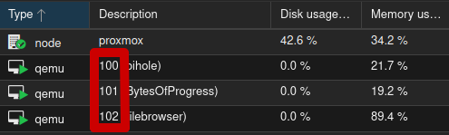

BytesOfProgress
Wiki
Stop a Proxmox VM
Commonly, the "Stop VM" button in the Proxmox webinterface does NOT work for some reason. Here is how to stop a VM:
Every Proxmox VM has a numeric ID, here marked in red:
Let's say we want to stop the VM-101. Remember the ID, then open the shell / console of the proxmox node, not the shell / console of the VM you are trying to stop. Then type:
# qm stop 101
back